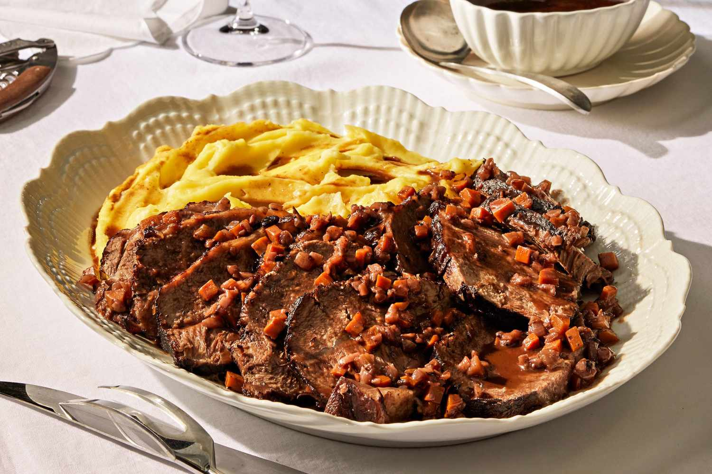

Stracotto di Fassona Piemontese

Description
Chef Otto Lucà considers this rustic top blade roast, slow-braised in red wine until it's falling-apart tender, the most important main course of classical Piedmontese cuisine. Marinating the roast overnight jump-starts tenderizing and helps season the meat all the way through. Mashed potatoes make an excellent side for this dish, providing a delicious way to mop up the sauce.
Ingredients
- 2 (750-milliliter) bottles Piedmontese red wine (such as Barolo)
- 2 pounds yellow onions (about 4 medium onions), finely chopped (about 6 cups)
- 12 ounces carrots (about 4 medium carrots), peeled and finely chopped (about 2 cups)
- 1 medium (about 1-ounce) celery stalk, finely chopped (about 1/4 cup)
- 3 medium garlic cloves, finely chopped (about 1 tablespoon)
- 1 (5-inch) rosemary sprig
- 2 fresh bay leaves
- ¼ teaspoon ground cloves
- 1 (4- to 4 1/2-pound) boneless top blade roast
- 4 teaspoons kosher salt, divided, plus more to taste
- 2 teaspoons black pepper, divided, plus more to taste
- 5 tablespoons extra-virgin olive oil
Steps
- Stir together wine, onions, carrots, celery, garlic, rosemary, bay leaves, and cloves in a large enameled Dutch oven. Rub meat all over with 2 teaspoons salt and 1 teaspoon pepper, and place in wine mixture. Cover with lid, and refrigerate overnight (about 12 hours).
- Remove meat from wine mixture. Scrape off any vegetables stuck to meat, and transfer meat to a large plate. Pat dry with paper towels. Pour wine mixture through a colander set over a large bowl; reserve vegetables and liquid separately at room temperature. Wash and dry Dutch oven.
- Add oil to cleaned Dutch oven; heat over medium-high. Sprinkle meat all over with remaining 2 teaspoons salt and remaining 1 teaspoon pepper. Add meat to Dutch oven; cook, turning occasionally, until browned on all sides, 16 to 20 minutes. Transfer meat to a large plate. Add reserved vegetable mixture to drippings in Dutch oven; cook over medium-high, stirring often, until softened, 12 to 16 minutes. Return meat to Dutch oven, and pour in reserved strained wine. Bring to a boil over medium-high. Reduce heat to medium-low; cover and simmer, turning meat occasionally, until meat is fork-tender, 2 hours to 2 hours and 30 minutes.
- Transfer meat to a cutting board, and tent with foil; let rest while reducing sauce. Remove and discard rosemary sprig and bay leaves from mixture in Dutch oven. Using a fine wire-mesh strainer, scoop and remove vegetable mixture from Dutch oven, and transfer to a medium bowl; set aside. Increase heat under Dutch oven to medium; cook, stirring occasionally, until wine mixture reaches the consistency of jus and has reduced to about 2 1/2 cups, 30 to 35 minutes. Season to taste with salt and pepper, if desired.
- Slice meat crosswise into 1/3-inch-thick pieces. Arrange on a platter. Ladle about 1/2 cup sauce over meat on platter. Serve alongside mashed potatoes and reserved vegetables. Serve remaining sauce on the side. —Otto Lucà, Langotto Ristorante, Piedmont, Italy